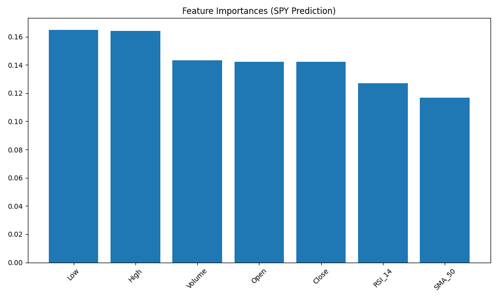

Architecture Overview
⚡ Python ETL Pipeline
Robust data extraction using yfinance to pull 5 years of daily historical data for SPY, QQQ, and VAS.AX. Features automated data cleaning with forward-fill logic and vectorized technical indicator computation (50-day SMA, 14-day RSI).
🤖 XGBoost Predictive Model
A binary classification model built with XGBoost. It predicts if SPY's closing price will exceed its opening price the following day. Implements a rigorous time-series split and lag-based target engineering to ensure zero data leakage.
Tech Stack
Python 3.12
Pandas
XGBoost
Scikit-Learn
Tailwind CSS
Model Insights
Global Feature Importance (XGBClassifier)

The chart above highlights the relative influence of daily price action and technical indicators on the next-day price movement prediction.
Live Dashboard
[ POWER BI IFRAME PLACEHOLDER ]
Awaiting live report integration...